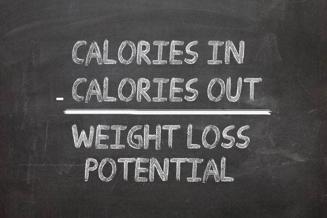

socially unredeeming
Let's focus on the math, people
As this is my first posting, I want to preface the following rant by pointing out that this page is not meant to serve as a fitness blog or food blog or otherwise. For that matter, I never wanted to have a blog. That said, for professional reasons, I needed to make a website, so despite the fact that most people create a website so they can have a blog, I'm creating a blog so that I can have a website. The topics of this blog, of sorts, will vary, and it just so happens the first one is about food, fitness, and health. With that out of the way, here we go.
Read more...Have you heard of that new diet? The one that's supposed to be super easy to follow? The one that works like magic? Right, I'm sure you have - and I'm sure, depending on who you ask, the diet in questions is always different. It would seem, given our lack of food insecurity in this country, the masses are always looking for new ways to trick themselves into eating better, being healthier, getting in better shape, etc. Well, you can probably tell from the tone of this paragraph, to this point, that I've taken exception to some or all of this. Well, that is partially correct, so points to you for being perceptive. It's not that simple though. No, scratch that - I should say, it's much simpler and much more difficult than you think. I'm not trying to suggest that there's anything wrong with wanting to be healthier - quite the opposite, in fact. I'm 33 years old and, up to this point, have spent more than half of my life in various states of poor health. From smoking to obesity to low carb (yes, you read that right), I've been around the block a few times. Despite all of that, I believe I have finally found myself in a state of relatively good health and, although future-me may look back and point out how wrong I am (as I am doing here with past-me), I believe I've got it all figured out this time. So let's take a journey, first to my past failures and then to me recent successes. At the end of this journey, you may come to the same conclusions that I have about weight, health, and the latest fad diet - that conclusion, of course, no matter how you achieve weight loss, it all breaks down to simple arithmetic and revolves around consuming fewer calories than you use.
Let’s start at the beginning. When a man loves a woman… er, maybe not that far back. When a young man loves a bowl of pasta, sometimes he eats that bowl of pasta and all of that bowl of pasta’s family and friends. From about 13 years old, roughly the time it occurred to me I could make my own food, I’ve struggled with portion size, food choices, and weight in general. Basically, something I would not realize until years later was I’m a pro at ignoring what my body is telling me and, as a result, my portion size was whatever was in front of me. Couple that with working at a bagel shop in my early twenties, a bagel shop that threw out all of the leftover bagels at the end of the night, and all of a sudden, my portion size was LITERALLY ALL OF THE BAGELS. Now, at the time, I justified that by telling myself that bagels were low in fat. Too bad my nightly dinner - of a dozen bagels - ended up being over 4,000 calories, not to mention the other meals I had throughout the day. Before I knew it, I was at a lean, mean 300lbs. Thankfully, I was still young and could make some changes.
Flash forward to age 24. Having just been turned down for life insurance, due to a less than stellar physical, I decided it was time to study - I decided I would not fail that test twice. After doing some research, I picked the fad diet that appealed to me most. The diet I chose was a low carb, keto-based diet. It worked. This isn’t surprising, as people use these diets for a reason. I could eat all the fatty meat I wanted and I was losing weight. In the end, one calendar year later, I had lost 110lbs and felt much better. I passed my test, purchased life insurance, and tried to adjust my diet for maintenance.
It was around that time I decided I needed to get a little more out of my food. I needed more than just protein, sodium, and calcium. As I slowly introduced vegetables and some cheat days back into my life, my daily carb intake rose, little by little, until it was around 60 carbs a day. Unfortunately for me, I had raised my carb intake past the threshold that my body would be tricked into eating itself (cuz that’s actually how low carb diets work) and was left with, at the time, a roughly 3,000 calorie a day diet. Couple that with my sedentary lifestyle and I ended up gaining 55lbs back over the course of the next 8 years. Not bad, right? Well, maybe, but I was still quite overweight, no longer felt great, and had unsavory, elevated levels on my physical. As loathe as I was to admit it, I had to diet again and what I did the first time wasn’t going to work. In an effort to make the right decisions the second time around, I did an overabundance of research on the topic. Unsurprisingly, there’s a lot of information out there, on the subject, and everyone thinks they’re right. What I found, as I referenced, cross-referenced, compared, and read countless articles, was that most people were at least partially right. At least, that’s the conclusions I drew after I started seeing the effects of my own, new regimen.
What occurred to me, after all of my research, was that all of these diets, fads, plans, and programs were all accomplishing the same ends, just by different means. I’ll give a few examples. I’m not going to focus on low carb, because low carb is effective for weight loss, ineffective for maintenance, and doesn’t follow my model because there’s a scientific basis behind why it works. With all that said, I don’t have a beef with it, if you want to use it for weight loss and then switch to a more sustainable, long term diet. Okay, with that said, I do have beef with some of the big diet plans out there. Weight Watchers has put together a program; wherein, you count up points and try to stay under your “target”. Okay, sounds reasonable. So, then they assign point values for certain foods - presumably, these values are based on calories and other nutritional value. Also, sounds reasonable, but here are my issues. For starters, they change point values here and there, and give bullshit reasons for it. Recently, they applied 0 points to a rash of different foods. Their reasoning? They were foods a person is unlikely to binge eat, like eggs and chicken. For starters, challenge accepted, and secondly, if someone has legitimate struggles over food consumption, I could very easily imagine that person eating a bunch of eggs. And at 70 calories a pop, they will add up. My other beef with the system is they charge money to apply points to food that basically rounds out to counting calories, with some exceptions that can get you in trouble. Another example would be the new Hi-F, or high fiber diet. It’s said to work, and I believe that. Hell, my current diet is similar to it, but here’s the rub: it works because fiber is filling and, if you eat a lot of fiber, you’re unlikely to overeat because you’ll feel full. Again, this works because you consume fewer calories, not because fiber is magical.
All of these fads and programs break down to one, major concept: if you can get yourself to eat fewer calories, then you may just lose weight. Well, I’ll go a step further and tell you that if you eat fewer calories than you use, you WILL lose weight. Full stop. It doesn’t matter if those are carbs or protein or fat or salt or cardboard, if you end up with a net loss on calories, you will shed weight. Now, I will amend that by saying that it is important to fill your diet with foods that provide nutritional value. For instance, you need certain vitamins and minerals for you body to function properly. Additionally, it is true that if you eat more fiber and protein, you will feel more full. If you drink plenty of water (and I guarantee you probably don’t), then you will no longer misperceive thirst for hunger and will eat less. Yes, you should tailor your diet to include foods that are nutritional, but regardless of everything, weight gain and weight loss break down to simple arithmetic.
I’ll show my work briefly and you can take all this as you will. This time around, my focus has been on maintaining a strict calorie goal 5 days a week. In my case, I used a website to figure my daily intake, which turned out to be 2,400 cal/day, based around activity level, age, and starting weight. I then multiplied that by 7, getting 16,800 calories for my weekly intake. Now, I know myself, and I knew I would want to eat more extravagantly on the weekend, so I decided to restrict myself during the week, when it’s easier to stick to a routine, and limit myself to 2,000 calories a day, 5 days a week. So, not only do I stick to my goals, but that allows me to eat 3,400 calories a day on Saturday and Sunday, so I don’t have to get rid of all of my guilty pleasure foods. My next step was to try to hit daily goals of fiber, carbs, fat, sodium, potassium, etc. This actually makes it really easy to stay under calorie goals because, as it turns out, food that is good for you is relatively low in calories. Finally, I introduced a strenuous workout routine, three days a week, and I’ve stuck with it since I started 8 months ago (keep in mind the workout routine is figured into my weekly calorie goals). Since starting this new lifestyle, I’ve lost 70lbs and am currently weighing in at 175. Anyhow, I’ll end this now, but just needed to get the all off my chest.
Mini Rant
At some point, I fully plan to post mini rants in this space. At this point in time; however, I am focusing on building the site and trying to foster interest to contribute from others. So, if you're reading this, keep in mind that I'd be more than happy to share your party stories, blogs, mini rants, or comics. Simply email me your material at Socially.Unredeeming.Stories@gmail.com, include your desired real or pen name, and let me know if you'd like the content posted as-is or if you'd like me to edit the content for publication.